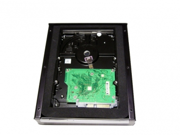
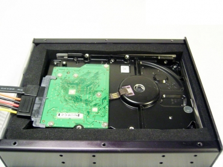
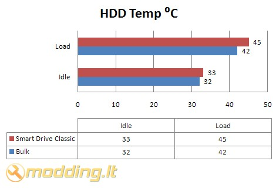

Grow UP Japan Smart Drive Classic
Manau, kad visi žinot, jog kietasis kompiuterio diskas dažnai būna labai triukšmingas, ypač jį stipriai apkrovus: pvz. žiūrint filmus ar kopijuojant duomenis. Namų sąlygomis diską nutildyti yra gan sunku. Nors kiekvienas moderis galėtų išvardyti bent 3 tokius praktinius būdus, bet jie nėra labai patogūs. Paprastas kompiuterių vartotojas nenori žaisti su aliuminio profiliais, gumomis, spyruoklėmis ir garso izoliacijomis, o trokšta greito ir masiškai gaminamo nutildymo sprendimo.
Vienas iš tokių įtaisų ir yra Grow Up Japan kompanijos gaminamas Smart Drive Classic kietojo disko aušintuvas - tildytuvas.
Žvilgsnis iš arčiau
Kaip matote, dėžutės spalvų gamoje dominuoja juoda ir balta. Ant dėžutės priekio pavaizduotas pats Smart Drive Classic įrenginys, trumpas produkto aprašymas anglų kalba, patentų numeriai, Grow Up Japan logotipas bei kolegų iš užsienio suteikti apdovanojimai. Gal po kiek laiko ten atsiras ir modding.lt rakčiukai, kaip galvojat? Kitoje dėžutės pusėje nepavaizduota nieko. Ant šonų - kompanijos rekvizitai ir tekstas japonų kalba.
Štai ką radau dėžutėje:
- Grow Up Japan Smart Drive Classic.
- Tvirtinimo varžtukus.
- SATA matinimo ir duomenų kabeliuką.
- Molex tipo maitinimo kabeliuką.
- Informacinį lapelį japonų kalba
Techniniai įrenginio parametrai:
- Modelio: Smart Drive Classic
- Dydis: 180 x 145 x 40 mm
- Svoris: 900 g
- Spalva: Juoda
- Sąsaja: SATA arba PATA
- HDD formatas: 3.5"
- Įrenginio formatas: 5.25"
Montavimo patogumui gamintojas prideda mini SATA maitinimo ir duomenų kabeliuką. Vienas jo galas jungiamas į HDD aušintuvo viduje, o kitas lieka aušintuvo išorėje. Gaila, bet komplekte neradau PATA duomenų kabelio ilgintuvo. Galbūt, gamintojas nusprendė, kad tokiais diskais jau niekas nebesinaudoja, arba kad nėra taip sunku visa ATA133 kabelį prijungti prie kietojo disko aušintuvo viduje. Bent gerai, kad Molex tipo maitinimo ilgintuvo nepamiršo. Jis gali praversti ir montuojant SATA diską.
Kaip matote, aušintuvo korpusas glotnus, jokių išsikišusių detalių. Aušintuvo korpusas yra visiškai uždaras. Netgi plyšelis duomenų ir maitinimo laidams yra padengtas garsą ir vibraciją sugeriančia medžiaga taip, kad uždėjus dangtelį, ji standžiai apglėbia laidus nepraleisdama į išorę nė menkiausio HDD skleidžiamo garselio.
Aušintuvo dangtelio šonai yra padengti gumine tarpine, kuri hermetiškai uždaro korpusą, susukus visus 6 tvirtinimo varžtelius. Dangtelio centrinė dalis yra padengta garsą sugeriančia medžiaga. Virš jos aliuminio plokštelė, sujungta su pačiu dangteliu. Tai šilumos nešiklis, turintis pernešti HDD šilumą į aušintuvo išorę.
Aušintuvo vidaus dizainas yra labai panašus. Visas vidaus perimetras yra išklotas storu garsą sugerenčios medžiagos sluoksniu. Centre - aliuminio dėžutė, taip pat, sujungta su aušintuvo išore. Ji stangriai apglėbia HDD ir neleidžia jam judėti.

Šioje dizaino vietoje Grow Up Japan inžinieriai truputi nusiprojektavo. Visos vidinės garsą sugeriančios medžiagos aukštis yra vienodas. T. y. inžinieriai nenumatė įgilinimo, į kuri turėtų atsigulti maitinimo ir duomenų jungtys, kaip kad yra konkurentų gaminame Scythe Quiet Drive HDD aušintuve. Toks įgilinimas apsaugo duomenų ir maitinimo jungtis nuo fizinio spaudimo.
Vidinė Smar Drive Classic dėšutė yra 21 mm gylio, todėl joje galima montuoti tiek standartinius storus diskus, tiek ir plonesnius. Su plonesniais yra šiokių tokių keblumų. Dėl minėto įgilinimo nebuvimo, diskas į vidinę dėžutę gula kreivai. Reikia labai labai pasistengti, norint jį įmontuoti tiesiai.
Testavimas
Štai mano PC konfigūracija:- Mainboard - DFI Infinity NFII Ultra
- CPU - AMD AlthonXP 2500+ @ 1837mhz
- CPU Cooler - AC Coper Silent 2L
- RAM - PQI DDR 1024 Mb 167Mhz
- HDD - WD 320 GB 7200rpm + 500 GB 7200rpm SATA
- Video - ATI Radeon 7500 64 MB VIVO
- DVD+/-RW - LiteON DVD+/-RW 8x4x8x12x SOHW-812S
- PSU -ACC 350w
- OS - XP SP3
Kaip buvo testuota:
Idle: Kompiuteris, dirbantis „tuščia eiga“, buvo paliekamas geram pusvalandžiui. Šio režimo metu veikė tik kasdieninės programos, nebuvo veikiama nieko ypatingo.
Load: Testo metu, buvo kopijuojami duomenys iš vieno disko į kitą. Duomenų paketą sudarė įvairaus dydžio failai, nuo 100 kB iki 1,42 GB. Bendras duomenų kiekis buvo ~15 Gb. Norint tikrai pasiekti disko disko virštemperaturį (šylimo kreivės tašką, po kurio diskas daugiau nebekaista, o visa parazitinė šiluma yra išspinduliuojama į aplinką), po duomenų kopijavimo buvo paleistas disko defragmentavimas "Deep Defragment" režimu.
Triukšmo slopinimo tyrimui buvo panaudotas senas triukšmingas Quantum FireBallPlus 20 Gb ATA diskas. Sumontavus diską į Smart Drive Classis aušintuvą, disko skleidžiamas garsas sumažėjo kelis kartus. Svarbiausia, kad aušintuvas - tildytuvas visiškai nuslopino aukšto dažnio disko skleidžiamus garsus (savotišką cypimą), liko tik žemo dažnio burzgimas. Nesumontuoto disko, gulinčio ant stalo, skleidžiamas garsas buvo girdimas ~1 m atstumu. Sumontavus diską, tą nemalonų cypimą buvo galima išgirsti tik visai prisikišus prie Smart Drive Classis aušintuvo, t.y. ~5 cm atstumu. Rezultatas ženklus.
Gaila, bet Smart Drive Classic beveik neslopina disko skleidžiamos vibracijos. Šis aušintuvas - tildytuvas neturi jokių antivibracinių priemonių, kurios neleistų disko skleidžiamoms vibracijos, pereiti į kompiuterio korpusą. Tai tikrai nėra gerai.

Pro et Contra
Pliusai:- Pakenčiamai aušina
- Gerai tildo HDD
- Pridėti SATA maitinimo ir duomenų bei Molex tipo maitinimo kabelių ilgintuvai
- Neslopina HDD vibracijų
- Dėl vidinės konstrukcijos laužia HDD duomenų ir maitinimo jungtis
 Grow Up Japan Smart Drive Classic testuose pasirodė išties gerai. Šio įrenginio aušinimo rezultatai tikrai nustebino, tikrai galvojau, kad diskas kais labiau. Tai, matyt, yra vidinio aliumininio rėmelio nuopelnas. Gaila, bet dėl šio rėmelio visos HDD kuriamos vibracijos pereina į aušintuvo korpusą. Kadangi, aušintuvas kompiuterio korpuse yra montuojamas tiesiogiai, t.y. nėra jokių vibracijas sugeriančių tarpinių, šios vibracijos yra perduodamos kompiuterio korpusui. Dėl to pačio rėmelio konstrukcijos ir garsą izoliuojančio sluoksnio storio, kai kuriuos diskus gali būti nepatogu montuoti. Ypač plonuosius. Reikia labai pasistengti, kad diskas "atsigultų" tiesiai. Nepaisant viso to, šis aušintuvas tikrai vertas dėmesio. Už šaunius aušinimo ir tildymo pasiekimus Smart Drive Classic suteikiu
9 balus ir
10 galimų.
Grow Up Japan Smart Drive Classic testuose pasirodė išties gerai. Šio įrenginio aušinimo rezultatai tikrai nustebino, tikrai galvojau, kad diskas kais labiau. Tai, matyt, yra vidinio aliumininio rėmelio nuopelnas. Gaila, bet dėl šio rėmelio visos HDD kuriamos vibracijos pereina į aušintuvo korpusą. Kadangi, aušintuvas kompiuterio korpuse yra montuojamas tiesiogiai, t.y. nėra jokių vibracijas sugeriančių tarpinių, šios vibracijos yra perduodamos kompiuterio korpusui. Dėl to pačio rėmelio konstrukcijos ir garsą izoliuojančio sluoksnio storio, kai kuriuos diskus gali būti nepatogu montuoti. Ypač plonuosius. Reikia labai pasistengti, kad diskas "atsigultų" tiesiai. Nepaisant viso to, šis aušintuvas tikrai vertas dėmesio. Už šaunius aušinimo ir tildymo pasiekimus Smart Drive Classic suteikiu
9 balus ir
10 galimų.
Modding.lt komanda dėkoja Hiroki Iida iš www.gup.co.jp už apžvalgai suteiktą produktą.
Jei norėsite pakomentuoti mano straipsnį arba pareikšti savo nuomonę, apsilankykite Modding.lt forume.


{kind=link}
{kind=link}
{kind=link}
{kind=link}
{kind=link}
{kind=link}
{kind=link}
{kind=link}
{kind=link}
{kind=link}
{kind=link}
{kind=link}
{kind=link}
{kind=link}
{kind=link}
{kind=link}
{kind=link}